3D В Visio? Методы и способы создания объемных объектов.
 При рисовании работ или при создании образов всегда хочется придать им немного объема и реалистичности. Инструментами для этого Visio располагает скудными. Например, для изображения шара Visio может предложить только градиентную 2-х цветную заливку по центру.
При рисовании работ или при создании образов всегда хочется придать им немного объема и реалистичности. Инструментами для этого Visio располагает скудными. Например, для изображения шара Visio может предложить только градиентную 2-х цветную заливку по центру.
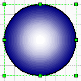
Данный метод выглядит не очень убедительно. Хотя для более изысканных вещей существует Photoshop. Но если вы хотите создать векторный объект, с которым Visio будет работать как с родным и отображать корректно, то есть несколько способов.
- Открываем CorelDraw (он нам нужен как дополнительный инструмент и против его использования ничего против не имею) и рисуем круг (в приложении нажать F7 и нарисовать круг, зажав Ctrl). Далее Edit>Properties и в разделе Fill выбрать нужный цвет. Нажать на Fountain Fill далее Edit.
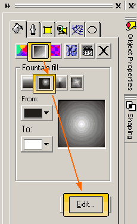
Поставить 15-20% в Center offset. Далее выйти из меню и выделив объект нажать Ctrl+C.
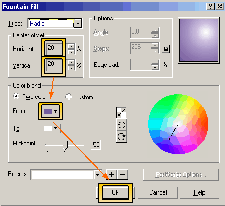
Переходим в Visio. Выбираем в меню (EN:View>Windows>Drawing Explorer RU:Вид>Окна>Обозреватель чертежа). В открывшемся окне выбираем пункт Fill Patterns (Узоры заливки) и, нажимая правую кнопку мыши, выбираем New... (Создать узор...).
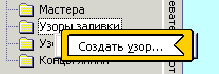
Задаем ей имя, отмечаем в Behavior (Поведение) самый правый значок. Нажимаем ОК.
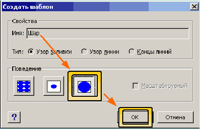
Затем выбираем только что созданную заливку и, нажимая правую кнопку мыши выбираем Edit Pattern (Изменить узор).
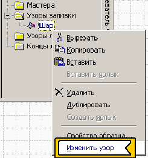
Затем нажимаем Ctrl+V и вставляем Corel объект. Нажимаем Ctrl+U (В Visio 2002 Ctrl+Shift+U) и разгруппировываем в Visio объект. Далее выходим обратно и рисуем круг средствами Visio. Заходим в Fill (Заливка) или нажимаем F3, и выбираем в Pattern (Узор) название нашей заливки.
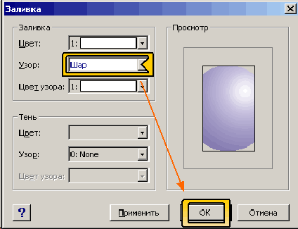
И наконец получаем красивый масштабируемый шарик (причем это объект Visio).
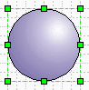
- Есть еще способ улучшения объекта.
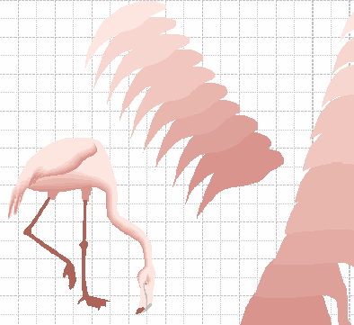
Он состоит в уменьшении частей скопированного объекта с последующей их закраске относительно основного объекта. Достаточно трудный способ для новичков. Но в значительной степени улучшает объект.
- Самый трудный и замороченный, но самый реалистичный способ.
Берется 3Dmax, строятся объекты, делается рендеринг. Далее обрабатывается в CorelTRACE, редактируется в CorelDraw, экспортируется в *.cgm формате в Visio и в итоге получается векторный, полностью масштабируемый Visio-объект.
Вот такой самолет получился полностью векторный. Весит 76кб кто хочет посмотреть, пишите.
Вообще все и всегда можно перетащить в Visio и сделать так чтобы Visio считал и работал! с объектами из других приложений как с “родными”.
Теперь некоторые замечания по работе с Visio.
- Visio 2000 не отображает более 255 цветов на рабочий лист (Visio 2002 до 65535 цветов).
- В названии директорий трафаретов не должно быть специальных символов.( ! @ # $ % & _ ) Эти директории не обрабатываются приложением. Также в названиях нежелательно употреблять запятые, т.к. они вызывают ошибку Visio(обе версии)(error –1).
- Самих директорий не должно быть более 256, и они все не должны превышать 256 трафаретов. Большее кол-во будет затемнено.
- В трафаретах не должно быть более 1023 объектов. Вообще Visio требователен к организации директорий, трафаретов, особенно к названиям.
- У Visio 2000 движок обработки объектов не обрабатывает кривых линий в экспортируемых объектах, заменяя кривую несколькими прямыми (Visio 2002 знает о существовании кривых и нормально с ними работает).
- Для быстроты подбора высоты шрифта очень полезно вывести Увеличение на 1 пункт и Уменьшение на рабочую панель.
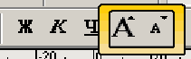
Тогда подбор высоты не составляет труда. (В Visio 2002 есть эта функция через клавиатуру. Ctrl+Shift+, и Ctrl+Shift+. за точность не ручаюсь, но были описаны в Visio2002 ShortCut reference на сайте MicroSoft). Либо создать комбинации, как было описано в этой статье.
- И на последок пара найденные мною красиво сочетающиеся цвета для диаграмм.
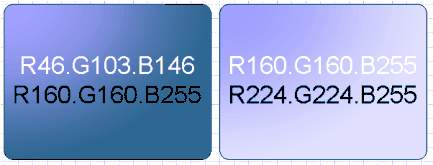
Примеры из статьи.
В начало раздела
Предыдущая статья
Следующая статья
Автор: Ничков Алексей (a.k.a. Digitall)